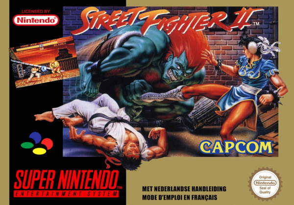

La console de jeux vidéo Super Nintendo Entertainment System dispose d’une bibliothèque de jeux, publiée dans des cartouches en plastique, qui diffèrent d’une région à l’autre; Les cartouches américaines étaient rectangulaires et avaient des fentes adaptées aux saillies de la console, tandis que les cartouches des autres régions étaient plus étroites, avec des courbes lisses à l’avant et aucune rainure. L'incompatibilité physique peut être surmontée en utilisant des adaptateurs ou en modifiant la console. La console dispose également d'un verrou de région qui empêche les cartouches de région PAL d'être utilisées au Japon ou en Amérique, et inversement, mais vous pouvez également le contourner en utilisant des adaptateurs.
Officiellement, la Super Nintendo a publié 784 jeux, dont 251 exclusifs pour l’Amérique et 63 pour l’Europe. Il est sorti aux Etats-Unis le 23 août 1991 avec Super Mario World, F-Zero, Pilotwings, SimCity et Gradius III. Le dernier jeu sorti sur le système était Nightmare Busters en 2013. Le jeu le plus vendu est Super Mario World avec plus de 20,6 millions d'unités vendues.
Voici une list avec les 7 jéux vintages plus vendu de la console. Téléchargez et consultez la liste des 15 jeux les plus vendus.
| List des jéux vintages plus vendu | ||||
|---|---|---|---|---|
| No | Title | Anné | Copies vendu (millions) | |
| 1 | Super Mario World | 1990 | 20.60 | |
| 2 | Donkey Donkey Kong Country | 1994 | 9.00 | |
| 3 | Super Mario Kart | 1992 | 8.76 | |
| 4 |  | Street Fighter II |
1992 | 6.30 |
| 5 | The Legend of Zelda : A Link to the Past |
1991 | 4.61 | |
| 6 | Donkey Donkey Kong Country 2 : Diddy's Kong Quest |
1995 | 4.37 | |
| 7 | Street Fighter II Turbo : Hyper Fighting |
1993 | 4.10 | |
Une petit liste avec les jeux préférés d'auteur
Voici la list des 3 jeux incontournables, par priorité:
Une création de Cristiane Garcia